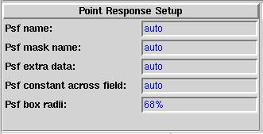

|  | This part of the dialogue is the interface to the psf selection system. By default it will try to determine the correct psf from information in the file header. If unable to do this it will prompt for additional parameters. The experienced user of PSS will be able to use the entry fields to enter these before starting PSS. |